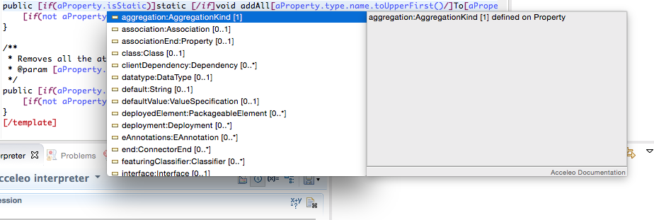

Acceleo
And you thought you knew template based code generators?
Created by Stéphane Bégaudeau / @sbegaudeau
About Me
Stéphane Bégaudeau
Software Engineer at Obeo
Leader of Acceleo
Acceleo
Open source code generator
Can generate any kind of text
From any kind of models
Built with the tools of your choice
History
2006 - Birth of Acceleo (GPL)
2008 - MOFM2T specification
2009 - Eclipse Foundation (EPL)
2015 - Acceleo 3.6.0 for Eclipse Mars
Open Project
Git and Gerrit
Continuous integration on Hudson
Bugzilla
Wiki and website
MOFM2T
OMG's standard for model to text transformation
Model to Text transformation language (MTL)
Parameterized by some metamodels
Manipulated with a superset of OCL
MTL
Implemented in Acceleo
Modules
One module for each kind of file to be generated
Imports
A module can import other modules
Extends
Modules can be extended and templates overridden
Dynamic Overriding
Once your generator has been built and deliver to your customers, you can still patch it with another generator which would override part of an existing one
Templates
Can contain static parts in black and dynamic parts in blue, computed from the input model
Templates
Or all of them simultaneously
Variables
They are read only, you can't modify them!
File
This block is used to create a file
Queries
Will have their result stored in a cache
Queries
Mostly used to call Java services
Code Generation
Acceleo can generate any kind of text: JavaScript, Java, C#, Swift, XML, etc
Generation Strategy
Acceleo writes your generated content on the filesystem by default, you can change what happens with it (send it to a HTTP server for example)
Acceleo and OCL
Object Constraint Language
MDT OCL: Implementation for EMF-based models
Used in Acceleo since Eclipse 3.4
Acceleo and EMF
Eclipse Modeling Framework
You can configure some parts (metamodel registration, model loading, resource factories, etc)
Acceleo and UML
Fully compatible with the MDT UML project
EMF based implementation of the UML metamodel
Models
Acceleo is compatible with EMF models, regardless of the way they have been created
Xtext, UML Designer, Papyrus, EMF Forms, EMF tree-based editor, etc...
Acceleo
Standard library: OCL, MTL and EMF
Non standard library: filter, trim, invoke, addAll etc
Strict compilation mode available
Tooling and Features
Acceleo Perspective
Wizards
Create new Acceleo project or a basic UI for your generator
Wizards
Initialize your generator with your metamodels
Wizards
Initialize your generator with an existing sample
Syntax Highlighting
You can change the settings of the syntax highlighting thanks to the Acceleo preferences
Quick Replacement
Replace all the occurrences of a piece of static text in a module with an expression
Refactoring
Rename a template or a query and all its occurrences
Code Completion
Find all the structural features of an EObject
Code Completion
Find all the templates and queries that can be called
Code Complation
Find all the EOperations and EMF operations
Debug
Use breakpoints to stop the generator and have a look at the state of your variables
Interpreter
Run Acceleo expressions against a model
Interpreter
Store variables in the interpreter
Interpreter
Write complete templates

Interpreter
And see the result
Interpreter
You can also contribute your own language to the Acceleo interpreter and reuse it outside of Acceleo
Sirius Integration
You can use Acceleo directly in Eclipse Sirius to build your designer
Build
Build your Acceleo generator using Maven. Integrates nicely with Eclipse Tycho.
Incremental Generation
Use protected blocks to define parts of the generated code where the user can safely modify anything
Lost Files
If you remove a protected area from your generator, we will create a .lost file with your content
Stand Alone
You can build and run your generator out of Eclipse
Stand Alone
You need to register by yourself your metamodels, resource factories, UML profiles, etc.
For more information
Thanks!
Any questions?